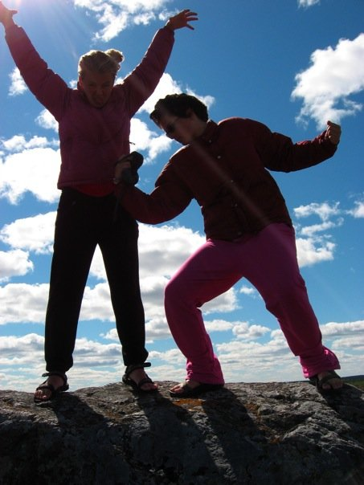
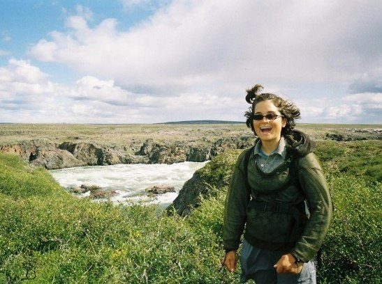
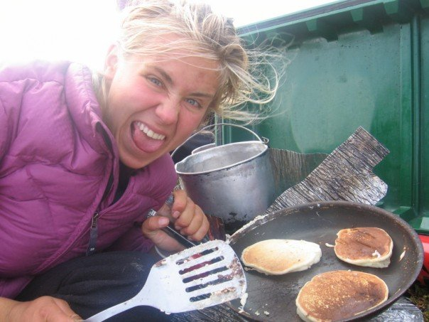

Bios
 Natalie and Ann met through YMCA Camp Menogyn in 2007. They went on the same seven week trip on the Kazan and Kunwak Inuit heritage rivers of Nunavut, Canada, ending in Baker Lake. After this monumental trip, both Natalie and Ann attended St. Olaf College in Northfield, MN.
 Natalie grew up in Miami, Florida where she attended the New World School of the Arts for saxophone performance. In 2005, she flew to Minneapolis and headed north to Menogyn. After a two week canoeing trip in the BWCA, Natalie fell in love with the wilderness and later decided to pursue an Environmental Studies degree at St. Olaf. In the fall of 2010, Natalie participated in a Higher Education Consortium for Urban Affairs (HECUA) program in Minneapolis where she delved further into the world of environmental sustainability. She spends her free time playing the saxophone, dressing up as a bear, and working on organic farms.
 Ann grew up in Inver Grove Heights, Minnesota where she attended Convent of the Visitation High School. For most of her life, Ann's family brought her adventuring in the north woods to their cabin at the end of the Gunflint Trail. In 2008, Ann worked as a cook for Camp Menogyn and in 2009 and 2010 she worked as a trail guide. At St. Olaf she majored in mathematics with a concentration in environmental studies. Ann is interested in going to graduate school for population ecology in the distant future. She likes to play ultimate and cause trouble.